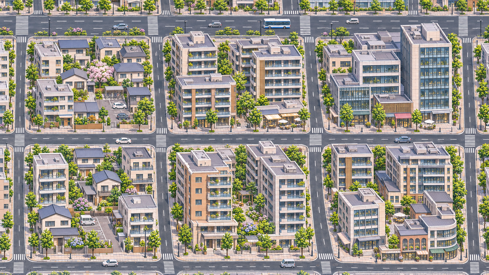
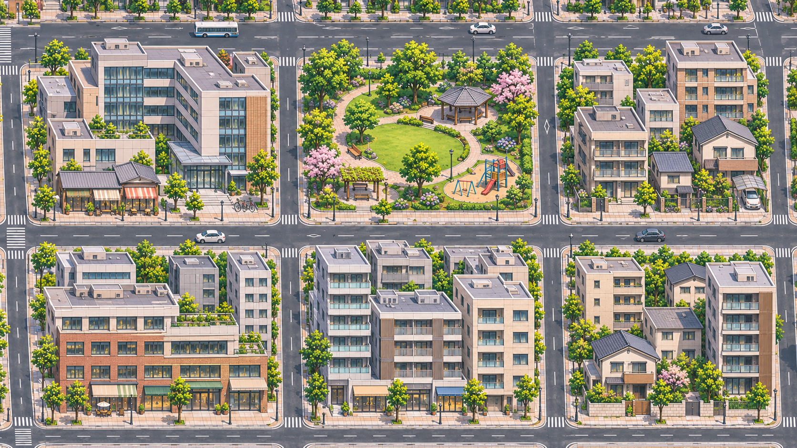

西、东各六个完整街坊。两张原生均为 1672×941；下图按原像素沿共享道路裁界拼接，完整母图保留。
导航只使用34条可见路面描线。西区北侧有1条经过屋顶遮挡的推定边，仅保留为街坊围合参考；主路径与绕行均排除该段。
可切换路径。距离只以原生像素记录；双向通行是假设，未验证车道/交通规则。
打开“街坊用途”可点选；这些是新样片的实际围合街坊，不是已完成的整城。
| 接口 | 东减西偏移 px | 距离 px |
|---|
六个实际街口分别保留，通过共享沥青路面的短段连接。标线和口部轻微错位仍可见，未将它们虚报成完全重合。
W 西区 · 商住核心过渡

E 东区 · 商住、社区公园与住宅

1个源像素对应1个CSS像素，仅供查看原始细节；未声称DPR或游戏近景验收。
已知限制：部分店面仍偏暖亮，住宅楼形语言仍有重复；两图未严格保留设计导向的尺度与留边。当前未建立可信米制标定，不能由这十二街坊推算整城覆盖百分比。